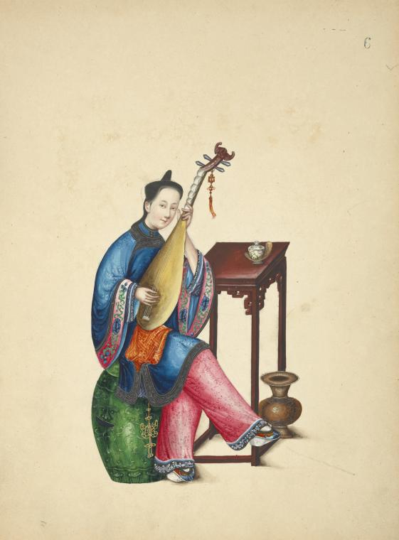
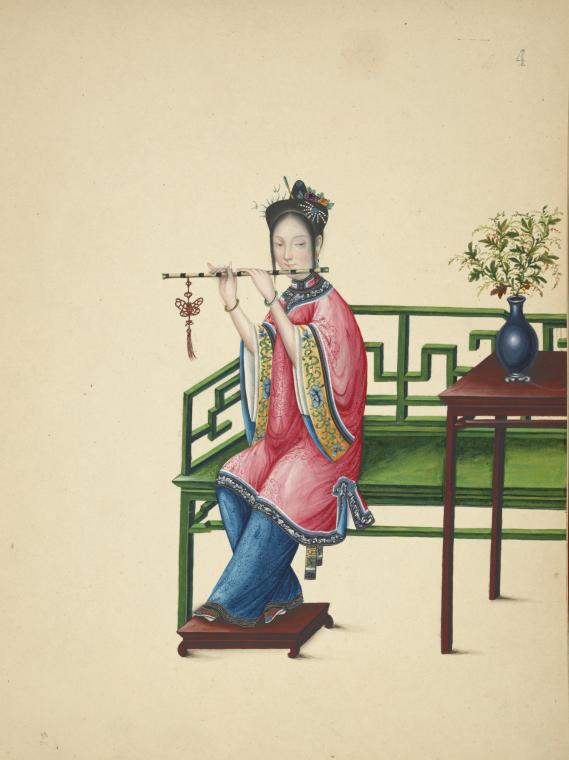

- Pipa
- Luo
- Dizi
- Xiao
- Yunluo
The pipa, pípá, or p'i-p'a (Chinese: 琵琶) is a traditional Chinese musical instrument belonging to the plucked category of instruments. Sometimes called the "Chinese lute", the instrument has a pear-shaped wooden body with a varying number of frets ranging from 12 to 31.
The luo (a generic term for gong) is found in a variety of sizes and, unlike the cymbal (bo), is tuned and is characterized by a quick rise in pitch after it is struck.
The dizi (Chinese: 笛子; pinyin: dízi, pronounced [tǐt͡sɨ]), is a Chinese transverse flute. It is also sometimes known as the di (笛) or héngdi (橫笛), and has varieties including Qudi (曲笛), Bangdi (梆笛), and Xindi (新笛). It is a major Chinese musical instrument that is widely used in many genres of Chinese folk music, Chinese opera, as well as the modern Chinese orchestra. The dizi is also a popular instrument among the Chinese people as it is simple to make and easy to carry.
The xiao (simplified Chinese: 箫; traditional Chinese: 簫; pinyin: xiāo; Wade–Giles: hsiao; Jyutping: siu1, pronounced [ɕi̯ɑ́ʊ̯]) is a Chinese vertical end-blown flute. It is generally made of bamboo. It is also sometimes called dòngxiāo (洞箫; 洞簫), dòng meaning "hole." An ancient name for the xiāo is shùzhúdí (豎竹笛, lit. "vertical bamboo flute", [ʂûtʂutǐ]) but the name xiāo in ancient times also included the side-blown bamboo flute, dizi.
Yunluo, Chinese gong chime usually consisting of 10 gongs that are suspended in individual compartments on a wooden frame and beaten with sticks that have hard or soft tips.